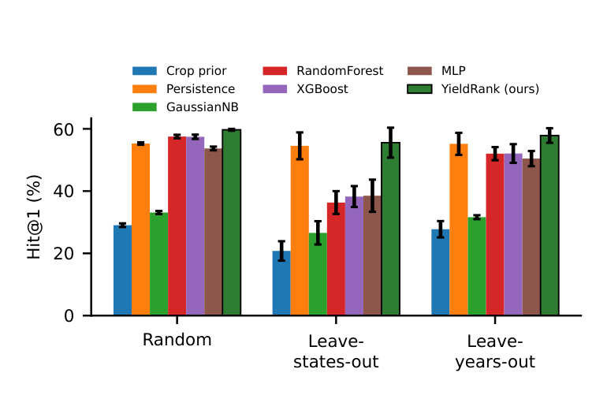
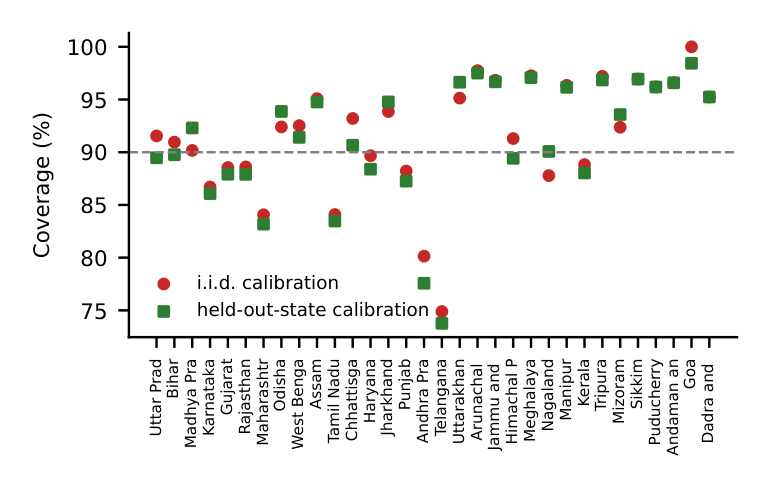

A newsletter on data-driven crop recommendation for Indian fields
AgroMind went through four versions. Each one fixed what the last got wrong. The final one, v4, ranks crops by the yield they actually achieved in official records, and is tested on Indian states it has never seen.
Most crop recommenders map soil N, P, K, pH and weather to a crop name and report about 99% accuracy [8], [11], [12], nearly always on one Kaggle table that its own page says was built by augmenting Indian data [31].
v1 was such a model: 98.00% on 2,200 Kaggle rows. Still lacking: its decoding left up to 3.09% of test rows with no answer and 13.09% with several, and a fixed lookup table already scores 88% on that data.
v2 fixed the decoding with one multiclass model and grew the data to 67,200 rows and 74 crops from three public tables: 94.33% accuracy, 99.18% within the top three. Still lacking: the tables disagreed, so trained on two and tested on the third it scored only 7–13%.
v3 fixed the data: 4,00,379 official district–season–year records [30], [38], tested on districts, states and years it had not seen. On new districts its first pick was a top-yielding crop 72.66% of the time, against 61.69% for "what this state usually grows". Still lacking: it still classified, counting any of three good crops as a hit; it could not say which crop yields best, or how sure it was.
v4 (final) asks the farmer's question directly: which crops do best here? YieldRank orders the crops grown in each district, season and year by expected yield, and adds a shortlist that comes with a coverage guarantee. On 36 states held out entirely, its first pick is the single best-yielding crop 55.6% of the time, against 38.5% for the best classifier from recent papers, and its 90% shortlists of 2.87 crops cover the best crop 90.1% of the time.
| v1 | v2 | v3 | v4 (final) | |
|---|---|---|---|---|
| Data | 2,200 Kaggle rows no place or year |
67,200 rows 3 public tables |
4,00,379 Govt. records 748 districts · 26 yrs |
259,181 Govt. records 43,443 queries · 1997–2022 |
| Question | crop label | crop label | top-3-yield crop first? | best-yielding crop first? |
| Random split | 98.00% as reported |
94.33% 5-fold | — | 59.7% hit@1 |
| Unseen data | — | 7–13% unseen source |
72.66% / 41.80% districts / states |
55.6% states (best classifier 38.5%) |
| Future years | — | — | 65.34% baseline 55.49% |
57.8% best classifier 52.1% |
| Confidence | — | ECE 0.076 under-confident |
— | 90.1% coverage 90% shortlist, 2.87 crops |
All figures are generated from docs/research/results.json (v4: results.json["v4"]["numbers"]).
Each version answers a harder question, so compare within a row with care: v3's hit@1 counts any top-3 crop, v4's
only the single best one.
Methodology
259,181 area-and-production records from the Directorate of Economics and Statistics [38], covering 36 states and 748 districts from 1997 to 2022. Each district gets season climate from NASA POWER [29] and topsoil properties from SoilGrids 2.0 [27] at its centre point.
One query is a district, season and year; the candidates are the crops grown there (6.0 on average). A crop's relevance is its yield percentile, i.e. how well it did compared with the same crop elsewhere that year. Hit@1 counts how often the top-ranked crop is the one that yielded best.
A LightGBM [35] learning-to-rank model trained on (district-season-year, crop) pairs. It sees season climate, soil, season and the district's own history: each crop's yield percentile last year and over three years, and its share of area. It never sees the state name, which says nothing about a state it has not met.
Split-conformal prediction turns scores into a shortlist meant to contain the best crop 90% of the time. The calibration data is either a random slice of training data or whole held-out states.

Future work
Evaluation
| Method (hit@1, %) | Random | Unseen states | Unseen years |
|---|---|---|---|
| Crop prior (naive) | 29.0% | 20.8% | 27.7% |
| Last-year persistence (naive) | 55.3% | 54.5% | 55.2% |
| Gaussian Naive Bayes [6], [12] | 33.1% | 26.6% | 31.6% |
| Random Forest [8], [21] | 57.5% | 36.3% | 52.0% |
| XGBoost [11], [22] | 57.5% | 38.2% | 52.1% |
| MLP [13] | 53.7% | 38.5% | 50.5% |
| YieldRank (ours) | 59.7% | 55.6% | 57.8% |
43,443 district–season–years; mean over five folds. YieldRank vs the best classifier on unseen states: +17.0 points, paired Wilcoxon p < 10−300.
Classifiers do not travel. The models used in recent papers lose most of their skill when the test state is new: Random Forest falls from 57.5% to 36.3%, XGBoost from 57.5% to 38.2%. YieldRank keeps 55.6%.
A simple rule is hard to beat. Repeating last year's best crop scores 54.5% on unseen states, close to YieldRank. No paper we reviewed reports this baseline.
Shortlists mostly keep their promise. With random calibration, 90% shortlists cover 90.1% overall, but only 74.9% in Telangana. For a Random Forest, calibrating on held-out states lifts coverage from 75.4% to 89.5%.

We read 15 crop-recommendation papers from 2024–2026 in full [11], [37], [39], [40], [41], [42], [43], [44], [45], [46], [47], [48], [49], [50], [51]. How many show each gap:
| Headline on the Kaggle 2,200-row table only | 9 / 15 |
| Random train/test splits only | 13 / 15 |
| Never check the crop's realised yield | 13 / 15 |
| No per-prediction uncertainty or shortlist | 15 / 15 |
| No significance test | 11 / 15 |
| Leakage admitted in the paper's own text | 4 / 15 |
| No code (or data) released | 13 / 15 |
| One state or region only | 2 / 15 |
Different target: these papers report accuracy at naming one of 22 crop labels, mostly on the
Kaggle table, where a plain Random Forest scores 99.5% in our own run. Our hit@1 asks for the single
best-yielding crop in an unseen state, a harder question, so the percentages are not directly comparable.
Details: docs/research/RECENT_WORK.md.
The Team
Project supervisor: Dr. Imran Khan, Dept. of CSE, HBTU Kanpur
B.Tech, Computer Science and Engineering · Semester VII · Academic session 2026–27
Contact: 230104047@hbtu.ac.in (Ravi Pratap Singh)
Disclaimer: AgroMind is an academic project, not an official Government of India service. Recommendations are for education and demonstration only and are not validated agronomic advice. Paper in preparation: "Beyond 99%: Yield-Grounded Crop Ranking with Conformal Prediction Sets, Evaluated on Unseen Indian States and Years", targeting IATMSI-2027 (IEEE).
References
Numbers follow the full literature review
(docs/research/LITERATURE.md, 51 sources); only works cited in this issue are listed.
[6] S. Pudumalar, E. Ramanujam, R. H. Rajashree, C. Kavya, T. Kiruthika, and J. Nisha, "Crop recommendation system for precision agriculture," in Proc. 8th Int. Conf. Advanced Computing (ICoAC), 2017, pp. 32–36, doi: 10.1109/ICoAC.2017.7951740.
[8] N. H. Kulkarni, G. N. Srinivasan, B. M. Sagar, and N. K. Cauvery, "Improving crop productivity through a crop recommendation system using ensembling technique," in Proc. 3rd Int. Conf. Computational Systems and Information Technology for Sustainable Solutions (CSITSS), 2018, pp. 114–119, doi: 10.1109/CSITSS.2018.8768790.
[11] B. Dey, J. Ferdous, and R. Ahmed, "Machine learning based recommendation of agricultural and horticultural crop farming in India under the regime of NPK, soil pH and three climatic variables," Heliyon, vol. 10, no. 3, p. e25112, 2024, doi: 10.1016/j.heliyon.2024.e25112.
[12] E. Elbasi et al., "Crop prediction model using machine learning algorithms," Appl. Sci., vol. 13, no. 16, p. 9288, 2023, doi: 10.3390/app13169288.
[13] C. Musanase, A. Vodacek, D. Hanyurwimfura, A. Uwitonze, and I. Kabandana, "Data-driven analysis and machine learning-based crop and fertilizer recommendation system for revolutionizing farming practices," Agriculture, vol. 13, no. 11, p. 2141, 2023, doi: 10.3390/agriculture13112141.
[21] L. Breiman, "Random forests," Mach. Learn., vol. 45, no. 1, pp. 5–32, 2001, doi: 10.1023/A:1010933404324.
[22] T. Chen and C. Guestrin, "XGBoost: A scalable tree boosting system," in Proc. 22nd ACM SIGKDD Int. Conf. Knowledge Discovery and Data Mining, 2016, pp. 785–794, doi: 10.1145/2939672.2939785.
[24] A. A. Reddy, "Impact study of Soil Health Card scheme," National Institute of Agricultural Extension Management (MANAGE), Hyderabad, India, 2020, doi: 10.31220/osf.io/n3d2m.
[25] Department of Agriculture and Farmers Welfare, Government of India, "Soil Health Card portal." [Online]. Available: https://soilhealth.dac.gov.in/ (accessed Nov. 22, 2026).
[27] L. Poggio et al., "SoilGrids 2.0: Producing soil information for the globe with quantified spatial uncertainty," SOIL, vol. 7, no. 1, pp. 217–240, 2021, doi: 10.5194/soil-7-217-2021.
[29] NASA Langley Research Center, "POWER: Prediction Of Worldwide Energy Resources." [Online]. Available: https://power.larc.nasa.gov/ (accessed Nov. 22, 2026).
[30] Directorate of Economics and Statistics, MoA&FW, Government of India, "District-wise, season-wise crop production statistics from 1997," Open Government Data (OGD) Platform India. [Online]. Available: https://www.data.gov.in/resource/district-wise-season-wise-crop-production-statistics-1997 (accessed Nov. 22, 2026).
[31] A. Ingle, "Crop Recommendation Dataset," Kaggle, 2020. [Online]. Available: https://www.kaggle.com/datasets/atharvaingle/crop-recommendation-dataset (accessed Nov. 22, 2026).
[35] G. Ke et al., "LightGBM: A highly efficient gradient boosting decision tree," in Advances in Neural Information Processing Systems 30 (NIPS), 2017. [Online]. Available: https://papers.nips.cc/paper/2017/hash/6449f44a102fde848669bdd9eb6b76fa-Abstract.html
[37] S. Sam and S. M. D'Abreo, "Crop recommendation with machine learning: Leveraging environmental and economic factors for optimal crop selection," arXiv:2505.21201, 2025, doi: 10.48550/arXiv.2505.21201.
[38] Directorate of Economics and Statistics, MoA&FW, Government of India, "Area, Production & Yield (APY) – Reports." [Online]. Available: https://data.desagri.gov.in/website/crops-apy-report-web (accessed Nov. 22, 2026).
[39] M. K. Senapaty, A. Ray, and N. Padhy, "A Decision Support System for Crop Recommendation Using Machine Learning Classification Algorithms," Agriculture, vol. 14, no. 8, p. 1256, 2024, doi: 10.3390/agriculture14081256.
[40] R. A. Ahmed, W. El-Shafai, Z. A. Ahmed, E.-S. M. El-Rabaie, and F. E. Abd El-Samie, "High-precision crop recommendation system with stacking ensemble classifiers for optimizing agricultural productivity," Sci. Rep., vol. 15, no. 1, p. 43377, 2025, doi: 10.1038/s41598-025-09640-5.
[41] H. Afzal et al., "Incorporating soil information with machine learning for crop recommendation to improve agricultural output," Sci. Rep., vol. 15, no. 1, p. 8560, 2025, doi: 10.1038/s41598-025-88676-z.
[42] S. Shastri, S. Kumar, V. Mansotra, and R. Salgotra, "Advancing crop recommendation system with supervised machine learning and explainable artificial intelligence," Sci. Rep., vol. 15, no. 1, p. 25498, 2025, doi: 10.1038/s41598-025-07003-8.
[43] G. Singh and S. Sharma, "Enhancing precision agriculture through cloud based transformative crop recommendation model," Sci. Rep., vol. 15, no. 1, p. 9138, 2025, doi: 10.1038/s41598-025-93417-3.
[44] H. Gunasekaran, K. Ramalakshmi, S. Debnath, and D. K. Swaminathan, "Physics-Aware Ensemble Learning for Superior Crop Recommendation in Smart Agriculture," Sensors, vol. 25, no. 19, p. 6243, 2025, doi: 10.3390/s25196243.
[45] M. Abu Bakr, A. J. Khan, S. D. Khan, M. H. Zafar, M. Ullah, and H. Ullah, "Evaluation of Learning-Based Models for Crop Recommendation in Smart Agriculture," Information, vol. 16, no. 8, p. 632, 2025, doi: 10.3390/info16080632.
[46] N. Piyar S and Baulkani S, "An explainable spatio-temporal deep learning framework for crop yield prediction and recommendation," Sci. Rep., vol. 16, no. 1, p. 24662, 2026, doi: 10.1038/s41598-026-54439-7.
[47] P. Mahesh and R. Soundrapandiyan, "A crop recommendation using improved expert-guided constraint aware differential evolution and CatBoost surrogate learning," Front. Plant Sci., vol. 17, p. 1884580, 2026, doi: 10.3389/fpls.2026.1884580.
[48] P. Latha and P. Kumaresan, "Smart crop recommendation: fusing nutrient and climate data with Krill Herd Optimization and explainable AI," Front. Artif. Intell., vol. 9, p. 1910196, 2026, doi: 10.3389/frai.2026.1910196.
[49] L. Reddy N and Gopinath M. P, "AgriOptNet: A hybrid optimization and lightweight deep learning framework for soil texture classification and crop recommendation based on nutrition," PLOS One, vol. 21, no. 7, p. e0350044, 2026, doi: 10.1371/journal.pone.0350044.
[50] S. K. D. Sharma, "Explainable machine learning for crop recommendation using statistical validation and SHAP interpretability in South Asian agricultural data," Discover Plants, vol. 3, no. 1, p. 317, 2026, doi: 10.1007/s44372-026-00795-7.
[51] V. Pandey, R. Tewari, and R. H. Laskar, "AgroSense 2.0: Cross-modal transformer fusion with geospatial raster integration and interpretable multi-task learning for precision crop recommendation," arXiv:2606.21892, 2026, doi: 10.48550/arXiv.2606.21892.